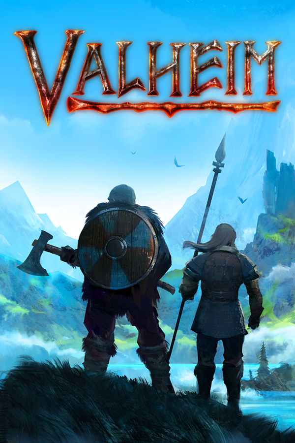

<!DOCTYPE html>
<html lang="es">

</html>

<head>

    <meta charset="UTF-8">
    <meta name="viewport" content="width=device-width, initial-scale=1.0">
    <title>Game Reviews</title>
    <link href="https://cdn.jsdelivr.net/npm/bootstrap@5.3.3/dist/css/bootstrap.min.css" rel="stylesheet"
        integrity="sha384-QWTKZyjpPEjISv5WaRU9OFeRpok6YctnYmDr5pNlyT2bRjXh0JMhjY6hW+ALEwIH" crossorigin="anonymous">
    <link rel="stylesheet" href="../assets/css/style.css">
    <script src="https://cdn.jsdelivr.net/npm/bootstrap@5.3.3/dist/js/bootstrap.bundle.min.js"
        integrity="sha384-YvpcrYf0tY3lHB60NNkmXc5s9fDVZLESaAA55NDzOxhy9GkcIdslK1eN7N6jIeHz"
        crossorigin="anonymous"></script>
    <script src="https://kit.fontawesome.com/cf1d4f5cef.js" crossorigin="anonymous"></script>
</head>

<body>
    <nav class="navbar navbar-expand-lg navbar-dark navbar-custom">
        <a class="navbar-brand" href="../index.html">Reviews De Jueguitos</a>
        <button class="navbar-toggler" type="button" data-bs-toggle="collapse" data-bs-target="#navbarNavAltMarkup"
            aria-controls="navbarNavAltMarkup" aria-expanded="false" aria-label="Toggle navigation">
            <span class="navbar-toggler-icon"></span>
        </button>
        <div class="collapse navbar-collapse" id="navbarNavAltMarkup">
            <div class="navbar-nav">
                <a class="nav-item nav-link" href="../index.html">Inicio</a>
                <a class="nav-item nav-link active" href="../index.html">Reviews</a>
                <a class="nav-item nav-link" href="#">Sobre Nosotros</a>
            </div>
        </div>
    </nav>

    <div class="review-container rc-valheim">
        
        <div class="review-content">
            <h1>Valheim</h1>
            <p>Valheim, con su enfoque innovador en el género de supervivencia, Viene a dar un golpe de realidad a la competencia. Este juego de supervivencia en un mundo abierto te sumerge en un mundo de vikingos lleno de criaturas míticas y desafíos épicos.

Lo que distingue a Valheim es su enfoque en la cooperación y la construcción. A diferencia de otros juegos de supervivencia, Valheim incentiva a los jugadores a trabajar juntos para construir fortalezas y enfrentar a las criaturas del mundo. Este enfoque en la cooperación hace que Valheim sea una experiencia única y gratificante.

Además, Valheim ofrece un mundo vasto y hermoso para explorar. Desde densos bosques hasta montañas nevadas, cada área en Valheim es única y llena de secretos para descubrir. El juego también cuenta con un sistema de progresión satisfactorio que recompensa a los jugadores por explorar y conquistar el mundo.

Sin embargo, Valheim no está exento de defectos. Algunos jugadores pueden encontrar el combate un poco torpe y la falta de una historia narrativa puede ser decepcionante para aquellos que buscan una experiencia más guiada.

En resumen, Valheim “Viene a dar un golpe de realidad a la competencia”. Con una calificación de 4.1 estrellas sobre 5, Valheim es un juego de supervivencia que ofrece una experiencia única y gratificante que se destaca en el género.</p>
            <h2><i class="fa-solid fa-star fa-md"></i> 4.1/5</h2>
            <iframe src="https://store.steampowered.com/widget/892970/" frameborder="0" width="646" height="190"></iframe>
        </div>
    </div>
        <footer>
        <p>@ningun derecho reservado o\ _ /o</p>
    </footer>
</body>

</html>
